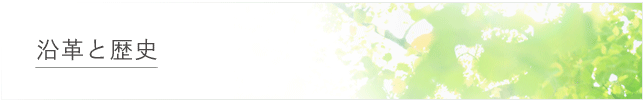

| 大正 5年(1916) | 広島高等師範学校教授、西晋一郎により禅学会が組織さる。広島市の国泰寺にて、毎週日曜朝、坐禅と提唱を行う。 昭和15年頃まで続けられ、この間、師の教導に会った学生の中から、井上幹造、内海巌（当財団の設立時の理事長）、森滝市郎等、戦後の教育界の立て直しと発展に貢献された方々を輩出した。（いずれも広島大学名誉教授） |
|---|
| 昭和 20年 | 広島高等学校、同師範学校、同高等師範学校、同文理科大学の学生有志は福島政雄、金子大栄、白井成允、藤秀璻等の傑出した倫理学者、仏教学者の下で仏教青年会を組織し、主に学内や教官の自宅において開かれた講座・読書会を中心に活動した。この会の組織された年は定かでないが、大正年代に遡るものと思われ、戦時まで続けられた。 広島高等師範学校は、戦禍を逃れて賀茂郡乃美尾村に疎開した。その頃、世界的英文学者、桝井迪夫の指導の下に、曉烏 敏等を講師に招き、歎異抄講座を中心に活動した。当時の学生代表は、兼田正男（当財団の第２代理事長）であった。 |
|---|
| 昭和18年 9月 | 広島文理科大学と高等師範学校は、結核を患う学生の心身の療養のため、広島市 高須町に健民修練所（通称、清明寮）を開設した。土曜講座（講師、師範学校卒業生の住岡夜晃）において歎異抄を受講。寮長は、文理大化学科学生の細川 巌（当財団設立時の理事）この寮は、終戦の年、昭和20年まで存続した。 |
|---|
| 昭和24年 | 新制広島大学発足とともに、文学部倫理学教授白井成允の指導の下に発足し、昭和30年代まで続けられた。 |
|---|---|
| 昭和45年 | 兼田正男（当時、広島大学教養部教授）と松田正典（当時、同助教授）の指導の下に再興。学内で読書会と月例講演会「仏教における人間形成」（講師：細川 巌）を始める。 |
| 昭和52年 6月 | 当時の学長飯島宗一、広島財界の白井市郎と田中好一を顧問に、広島大学西条移転を機に西条に広島大学仏教会館を建立するため、建設委員会が結成された。建設委員長は、内海 巌（当時、教育学部教授）。学の内外で募金運動を開始した。併せて、月例講演会（講師：細川 巌）を「歎異抄講座」として広島市民に公開する。 |
| 昭和53年 7月 | 広島大学仏教会館建設東広島地区世話人会を結成。（代表、佐竹久登） |
| 昭和54年 | 竹山晴夫学長に建設委員会顧問を依頼、全学の評議員会にて内海 巌が仏教会館建設計画を説明、他大学の前例に従い、名称を広島大学仏教青年会館とすることで了承を得る。 |
| 昭和55年 3月 | 東広島市西条町田口3894ｰ1に建設用地を取得。 |
| 昭和57年 3月 | 財団法人広島大学仏教青年会設立。 設立時の理事長は内海 巌、理事は井上幹造、兼田正男、佐藤秀雄、重松明久、檜原忠幹、細川 巌 常務理事：松田正典 |
| 昭和59年 2月 | 建設用地の開発許認可を取得。 |
| 昭和61年 11月 2日 | 広島大学仏教青年会館建設用地造成工事の起工式を挙行。 沖原 豊広島大学学長、讃岐照夫東広島市長列席。 |
| 昭和63年 | 内海巌理事長と井上幹造理事、重松明久理事のご逝去に伴い財団役員の改選を行う。 理事長：兼田正男 理事：沖原 豊、長坂大然、佐藤秀雄、寺川智祐、新本豊三、檜原忠幹、細川 巌 常務理事：松田正典 監事：古前 恒、頼 祺一 |
| 平成 2年 3月 | 広島大学仏教青年会館落成式を挙行。 |
| 平成 6年 4月 | 財団役員の改選を行う。 理事長：寺川智祐 理事：沖原 豊、兼田正男、長坂大然、佐藤秀雄、新本豊三、檜原忠幹、細川 巌 常務理事：松田正典 監事：古前 恒、頼 祺一 |
| 平成 8年 4月 | 細川 巌理事 と古前 恒監事のご逝去に伴い、財団役員の改選を行う。 理事長：寺川智祐 理事：沖原 豊、兼田正男、桂紹隆、佐藤秀雄、長坂大然、檜原忠幹 常務理事：松田正典 監事：林 七雄、藤谷義信 |
| 平成 9年11月 | 附属図書館落成式を挙行（広島大学仏教青年会創立８０周年記念事業）。 |
| 平成10年 | 「信は人に就く－唯信鈔文意に聞く－」細川 巌著（法蔵館）を、創立８０周年記念事業として刊行する。 |
| 平成12年 4月 | 財団役員の改選を行う。 理事長：寺川智祐 副理事長：兼田正男 理事：桂 紹隆、小丸法之、佐藤秀雄、長坂大然、林 七雄、檜原忠幹、藤谷義信 常務理事：松田正典 監事：赤堀興造、河野憲治 |
| 平成12年 11月 | 顕彰碑除幕式を挙行（広島大学仏教青年会館建立10周年記念事業）。 |
| 平成1４年 4月 | 松田正典の定年退官に伴い、財団役員の改選を行う。 理事長：桂 紹隆 副理事長：松田正典 理事：兼田正男、小丸法之、佐藤秀雄、長坂大然、寺川智祐、林 七雄、檜原忠幹 常務理事：藤谷義信 監事：赤堀興造、河野憲治 |
| 平成16年 4月 | 桂 紹隆の退官に伴い、財団役員の改選を行う。 理事長：松田正典 理事：桂 紹隆、兼田正男、小丸法之、佐藤秀雄、長坂大然、寺川智祐、林 七雄、檜原忠幹 常務理事：藤谷義信 監事：赤堀興造、河野憲治 |
| 平成16年 7月 | 財団主催少年錬成会10周年記念に植樹（娑羅）。 |
| 平成18年11月 | 創立90周年記念式典並びに記念講演会（第40回公開講演）。講師は、信楽峻麿。 |
| 平成25年10月1日 | 公益法人法施行に伴い、一般財団法人広島大学仏教青年会に移行。発足役員は、以下の通り。 評議員長：長坂大然、評議員：猪野明雄、川上秀史、小丸法之 理事長：松田正典理事：遠藤治宣、岡本貞雄、小川英世、築田哲雄、寺川智祐、友国義信、寺西誠真、永田純一、檜原忠幹、福井泰史 監事：信楽和宏 |